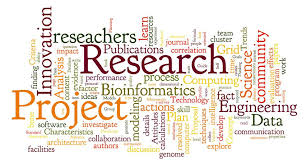

Welcome to my academic projects page! Here, you will find a collection of my research and academic endeavors that reflect my commitment to advancing knowledge and understanding in various fields. Each project represents a unique exploration of ideas, methodologies, and insights that contribute to the broader academic discourse.
Feel free to explore the projects listed below:
- The Ethical and Economic Case for Fair Law Librarian Compensation
- Dobbs and the Double Standard: Bodily Autonomy in Abortion vs. Mandatory Vaccination
For more information about my academic background and qualifications, please visit my resume.